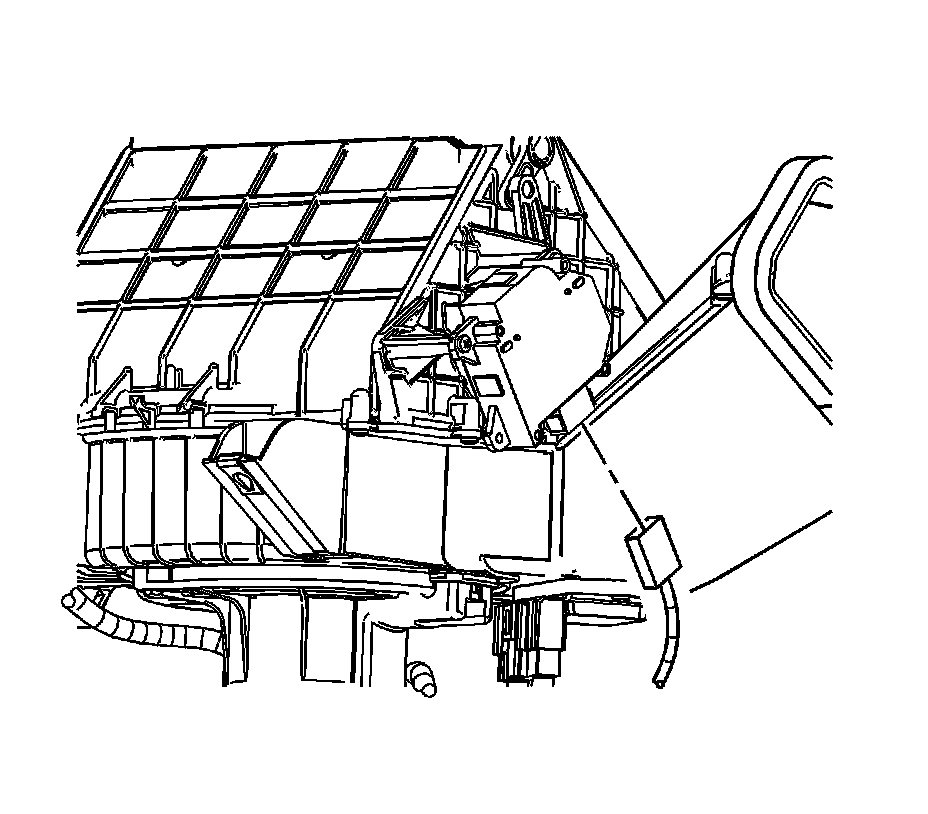
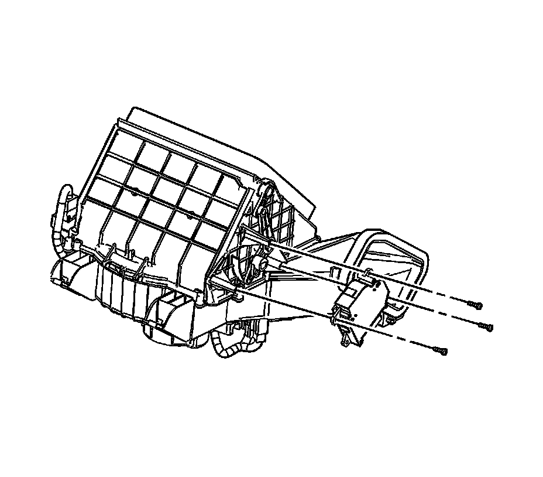

Recirculation Actuator Replacement (Right Hand Drive)
Recirculation Actuator Replacement (Right Hand Drive)
Removal Procedure

1. Remove the air inlet assembly. Refer to Air Inlet Assembly Replacement (Left Hand Drive) (Air Inlet Assembly Replacement (Left Hand Drive))Air Inlet Assembly Replacement (Right Hand Drive) (Air Inlet Assembly Replacement (Right Hand Drive)) .
2. Disconnect the electrical connector from the recirculation actuator.

3. Remove the recirculation actuator screws.
4. Remove the recirculation actuator.
Installation Procedure
1. Install the recirculation actuator.
Notice: Refer to Fastener Notice .
2. Install the recirculation actuator screws.
Tighten the screws to 2 N.m (18 lb in).
3. Connect the electrical connector to the recirculation actuator.
4. Install the air inlet assembly. Refer to Air Inlet Assembly Replacement (Left Hand Drive) (Air Inlet Assembly Replacement (Left Hand Drive))Air Inlet Assembly Replacement (Right Hand Drive) (Air Inlet Assembly Replacement (Right Hand Drive)) .